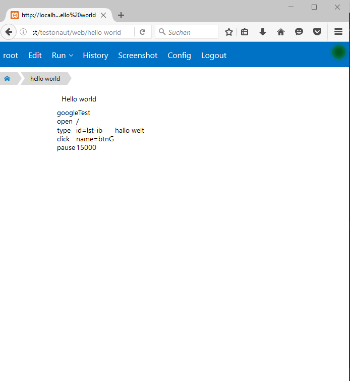

Create a new Page
After Login add to the url any string for naming your new Page.
After a click on [Edit], the Editor opens.
Click on [Save], then [Back] and you see your new Page.
Would you like add a selenese test, you must switch the editor to the source view.

For Hirachical navigations, seperate the pagename with dots.
Run a test
Testonaut have different types of Pages.
-
static This pages are ignored in a testrun
-
suite All children from a Suite are running as tests, exepted static pages
-
test A Single Test Page
-
project Should be the startpage for each running projects. All children are running as test, too
You can set the Type under [Config].
After Click on [Config] You can on the one hand set thy page type and on the other hand different screenshots settings.
Under [Screenshot Settings] you can set automatical screenshots after every command btw step or after every Test.
If you have set your page type on project, suite, or test, you get a new Menupoint [Run]
Now you can select under [Run] your selenium Node.

After click on your Node you get on the top right side a Notification about the test Run.

Under [History] you get all test results.
History
Build history
In the History Section you can overwatch all runs.
Delete history
Git history
All pages are under version control. You have under the tab section [git history] an overview over your page history.
You can make a checkout (btw a rewert) to older versions, or you can check the different between different revisions.

Checkout a older revision
View a different